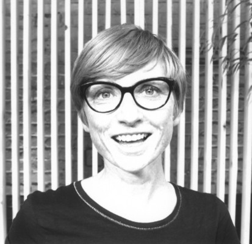

Teresa Sdralevich est née à Milan en 1969. Après une licence en Sciences Politiques à l’université de Bologne et un séjour à Paris, c’est à Bruxelles que Teresa Sdralevich a trouvé sa vocation: lors de l’examen d’entrée à la Cambre (École nationale supérieure des arts visuels), elle a découvert l’affiche, support qu’elle n’a plus jamais abandonné. Affichiste, graphiste, illustratrice et sérigraphe, Teresa Sdralevich travaille exclusivement sur des thèmes culturels, politiques et sociaux ; sa clientèle est principalement constituée par des associations, des théâtres, des magazines, des institutions gouvernementales, des organisations à but non lucratif ainsi que par des éditeurs, en Belgique et à l’étranger.

TERESA SDRALEVICH
Designer graphique
Depuis septembre 2020 Sdralevich enseigne le design graphique et l’illustration, à l’Academie voor Beeldende Kunsten Anderlecht (Bruxelles).